A great desk setup is about more than having a nice monitor sitting in the middle of it. It’s about having the tools you need to work comfortably, keep everything organized, and get through the day without constantly fighting your equipment.
For a long time, my main display has been a 34 inch Samsung ultrawide running at 1440p. It has served me well, especially considering how much I tend to have going on at once. Between my day job, running a website, managing social media, and everything else that finds its way onto my desk, I rarely have just one or two windows open.
I’ve been using the ASUS ProArt Display 5K PA27JCV for about a month and a half now, and it’s been an interesting adjustment. The image quality, clarity, and overall experience have been impressive. But what interested me about this monitor wasn’t simply the fact that it offers a 5K resolution. I wanted to know whether it could improve the way I work.
A 27 inch monitor replacing a 34 inch ultrawide might sound like a step backward on paper. I had some reservations about that myself. But after spending time with the PA27JCV, I have a much better appreciation for what a high resolution display can bring to a workspace.
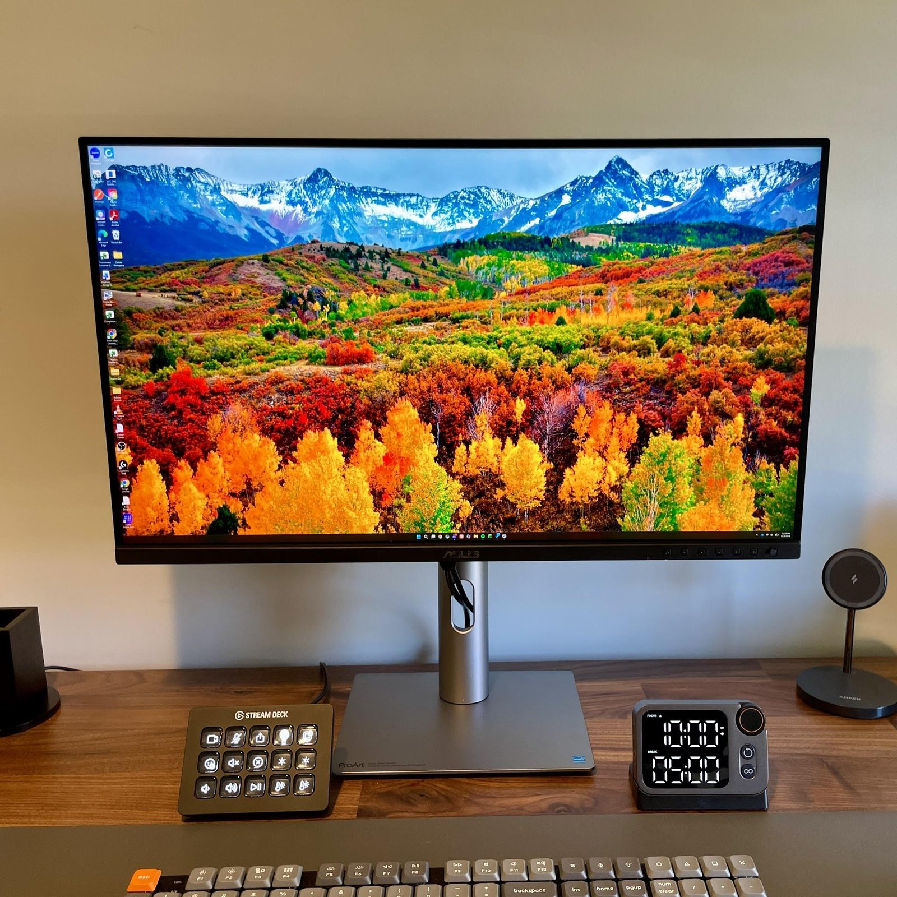
My Workspace Is Built Around Multitasking
My desk isn’t dedicated to one computer or one type of work.
For my day job, I use a Dell Pro Max 16. When I’m working on my website or managing social media, I’m using a Chromebook. Both have their own place in my workflow, and being able to move between them without completely rearranging my desk is important.
My previous setup involved a 34 inch ultrawide as the main display, with either a 1080p portable monitor positioned underneath it or my laptop sitting beside the main monitor. Each arrangement had its advantages, but neither was perfect.
The portable monitor gave me another screen, but it also took up additional desk space. Putting the laptop beside the ultrawide helped keep things simple, but it meant looking between displays that were sitting at different distances from my face. That might sound like a small thing, but when you’re constantly shifting your attention between screens, it gets old.
I also tend to have a lot of things open at once. Six to eight windows isn’t unusual for me. I prefer being able to see what I need rather than constantly reaching for Alt+Tab or digging through a window dashboard to find something.
That’s the environment I had in mind when I started using the PA27JCV. I wasn’t looking for a monitor that simply made everything look pretty. I wanted something that could handle the way I actually work.
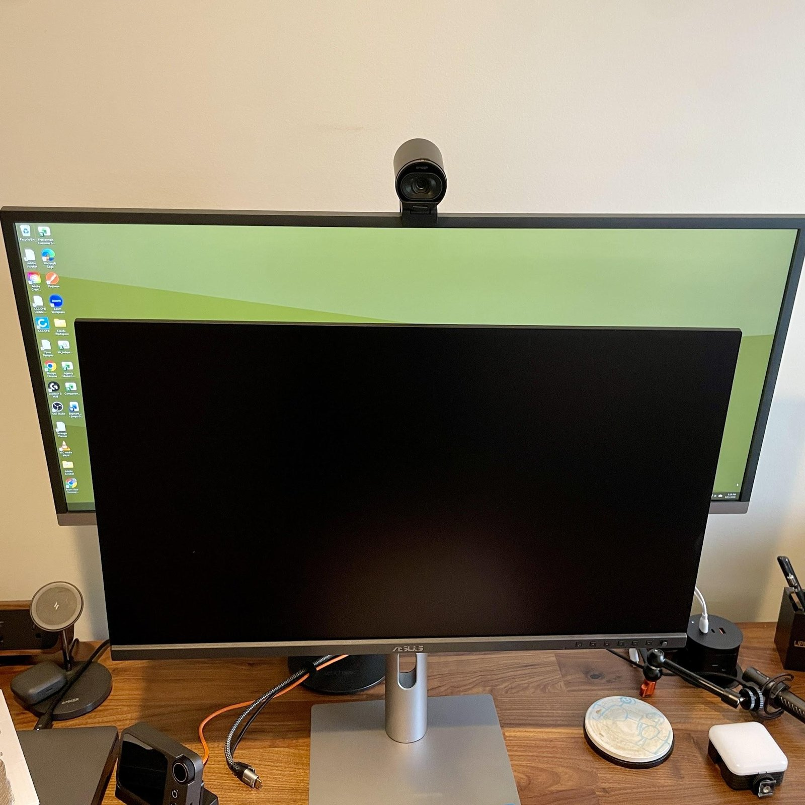
Going From 34 Inches to 27 Inches Was a Gamble
I’ll admit that I was apprehensive about moving from a 34 inch ultrawide to a 27 inch display.
Physical screen size matters, particularly when you’re accustomed to having a wide display in front of you. I had grown comfortable with the amount of horizontal space my Samsung provided, and I wasn’t convinced that moving to a smaller monitor was going to be an easy adjustment.
The PA27JCV changed that conversation pretty quickly.
The 5K resolution gives this 27 inch display a pixel density of approximately 218 pixels per inch. That’s a significant amount of detail packed into a relatively small panel. Text looks sharp, images are crisp, and the overall presentation is noticeably different from what I was accustomed to.
I’m running the display at 125% scaling. That gives me a comfortable balance between usable workspace and text that I can read without leaning toward the monitor. More importantly, I can keep six active windows visible and legible without feeling like I’m constantly sacrificing one window to make room for another.
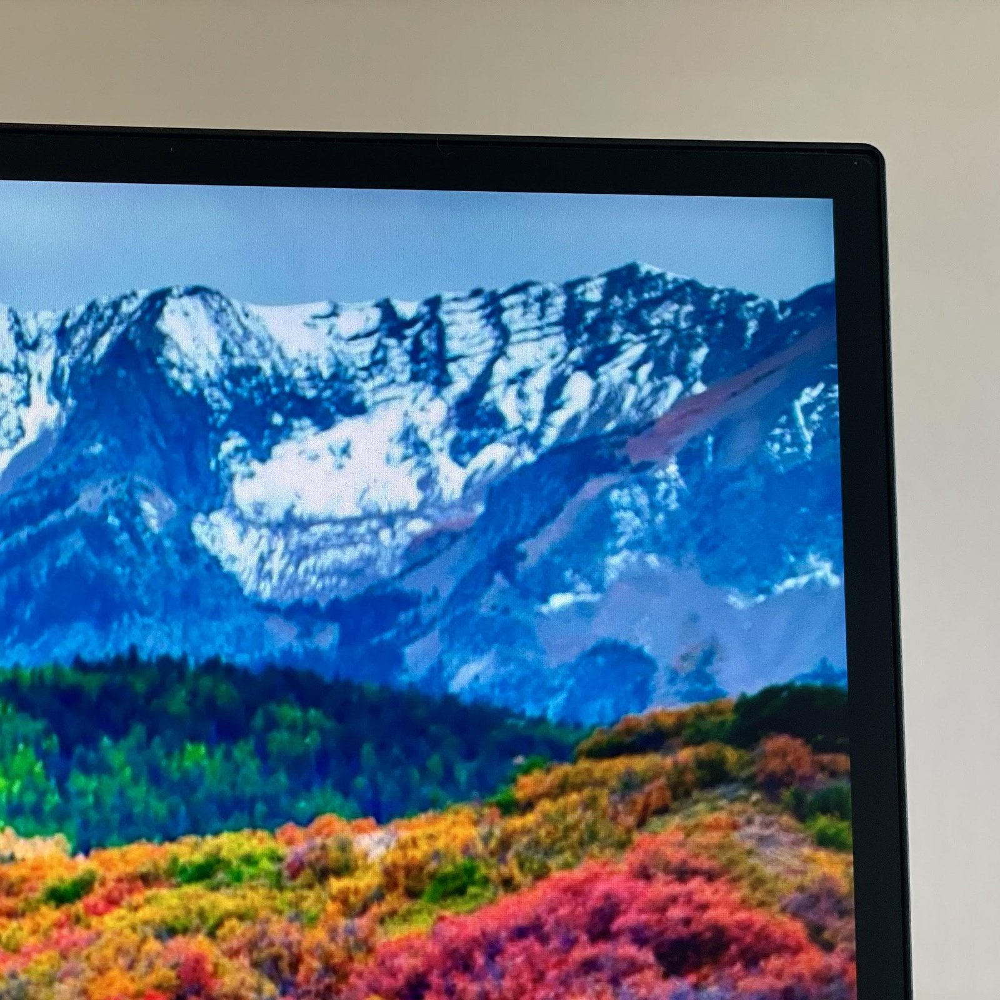
I still appreciate the physical size of an ultrawide, and I don’t think a 27 inch monitor is automatically going to be the right choice for everyone. But I went into this expecting to miss the extra inches more than I have.
Why 5K Instead of 4K?
This is probably the question that makes the PA27JCV particularly interesting.
A 27 inch 4K monitor already offers a pretty dense pixel count. Moving to 5K increases that resolution to 5120 x 2880, giving you 77% more pixels than a 4K display with the same aspect ratio.
That extra resolution has a couple of practical benefits. There’s the obvious improvement in pixel density, but there’s also the additional workspace available when you’re arranging applications, documents, and other content.
ASUS points out that the PA27JCV can display 4K content at its native resolution while leaving additional space for toolbars and other interface elements. That’s an interesting advantage for people who work with video, photography, or other creative applications where having additional panels and controls available can make a difference.
For me, the appeal is a little more straightforward. I want to be able to keep multiple windows open, read text comfortably, and avoid feeling like I’m constantly running out of room.
Of course, 5K isn’t necessarily the answer for everyone. A good 4K display may offer more than enough resolution for many people, potentially at a lower cost. I’d really like to spend some time comparing the PA27JCV against a quality 4K monitor to better understand how much of the difference translates into everyday use.
There’s a difference between looking at specifications on a product page and understanding what those numbers actually mean when you’re sitting at your desk for eight hours a day. That’s something I’d like to explore further.
The Clarity Is Immediately Noticeable
The first thing I noticed when I started using the PA27JCV was just how sharp everything looked.
At 218 pixels per inch, the display has a level of pixel density that makes text and fine details look exceptionally clean. It’s particularly noticeable when working with smaller text, spreadsheets, documents, and browser windows.
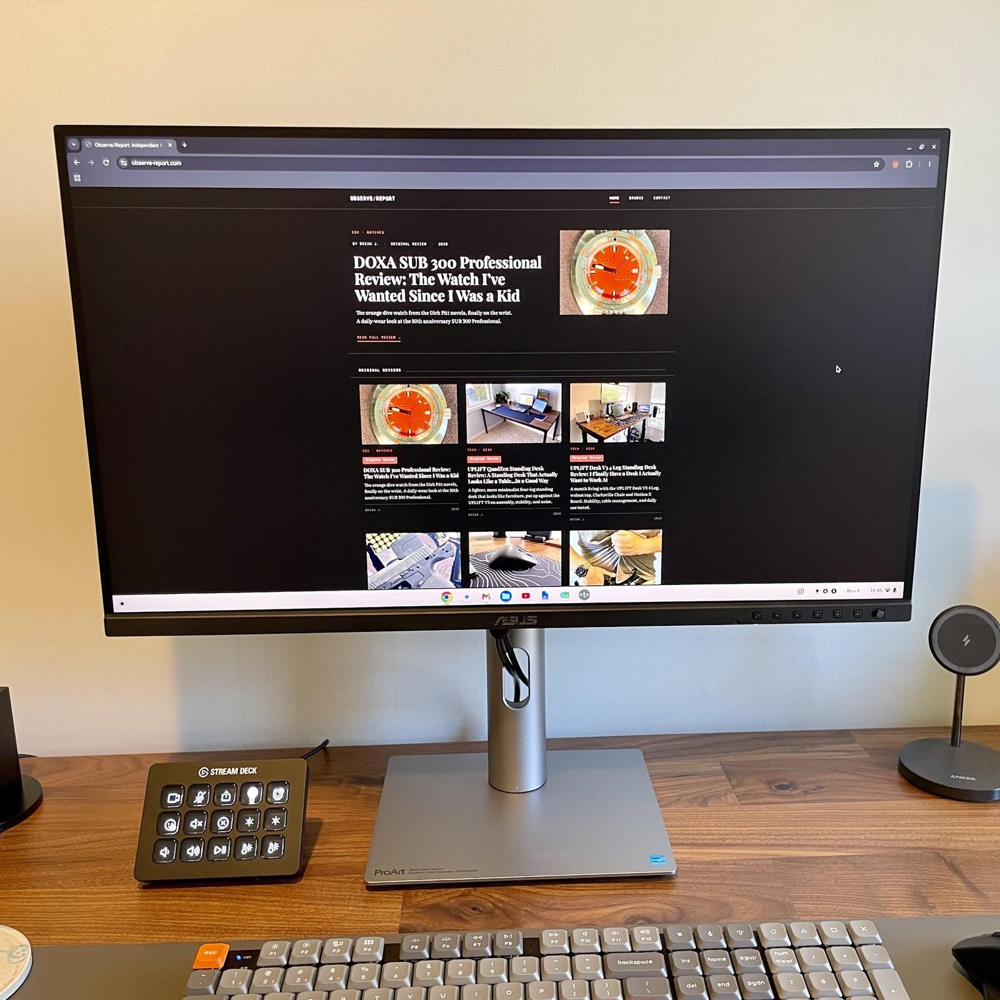
I spend a lot of time reading and writing, so this isn’t something I consider a minor detail. If I’m going to spend most of my working day looking at a screen, I want text to be easy to read and the image to be comfortable to look at.
The panel uses an IPS display with an anti glare, low reflection coating. It also offers wide viewing angles, which helps maintain a consistent image when you’re not sitting directly in front of the center of the screen.
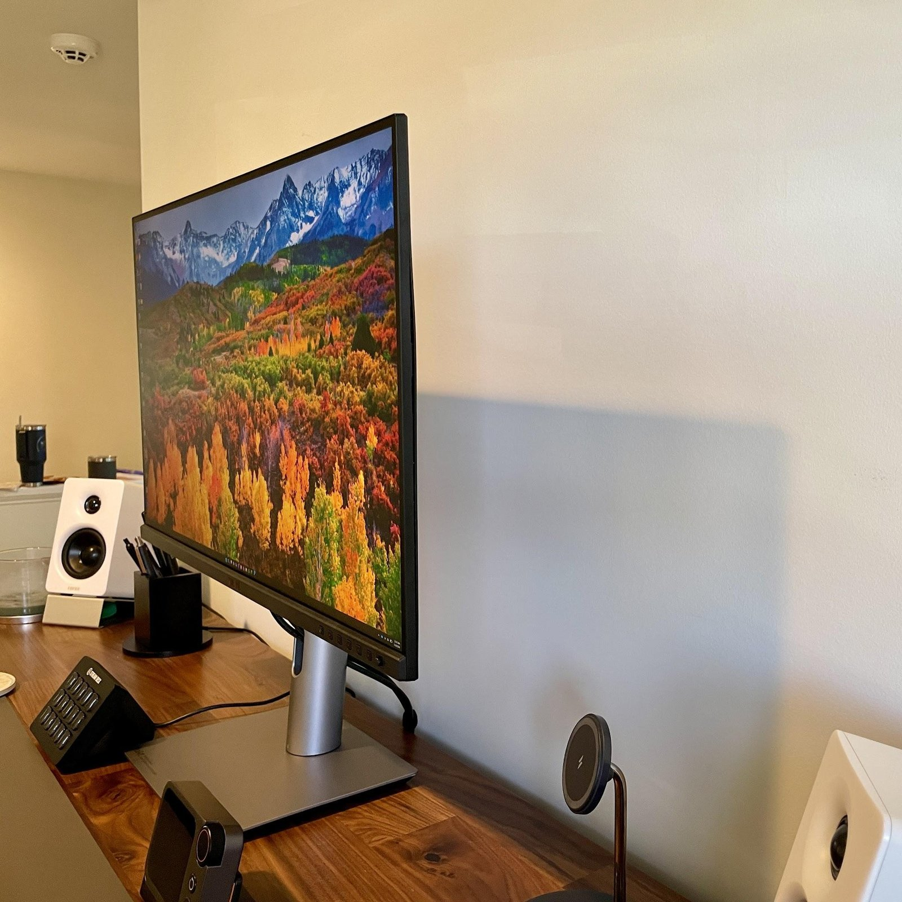
The PA27JCV is rated for 400 nits of typical brightness, with HDR peak brightness reaching 500 nits. It supports HDR10 and carries VESA DisplayHDR 500 certification.
I haven’t spent enough time evaluating the display specifically as an HDR monitor to make sweeping claims about that experience. My day to day use has been much more focused on productivity, clarity, and image quality. In those areas, I’ve been very happy with what I’m seeing.
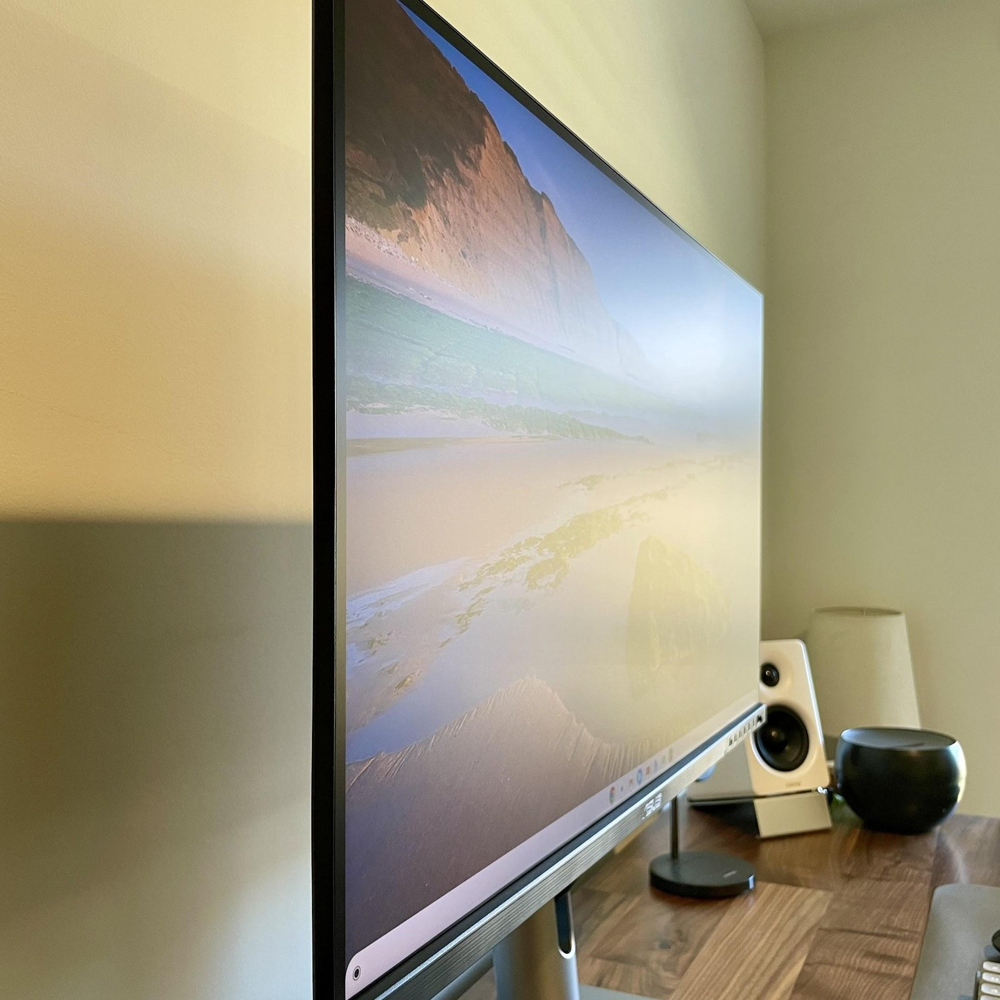
Six Windows, One Display
This is where the PA27JCV has made the biggest difference for me.
As I mentioned earlier, I’m regularly working with six to eight windows open. I might have a browser, a document, a spreadsheet, email, a content management system, and a handful of other things competing for space.
On a smaller or lower resolution display, that can turn into a lot of window management. You end up minimizing things, switching back and forth, or trying to remember where you left something.
With the PA27JCV, I’m running 125% scaling and have been able to keep six active windows visible without making everything uncomfortably small.
That doesn’t mean every window has an enormous amount of space. There are still compromises when you’re arranging that many applications on a 27 inch display. But the resolution gives me more flexibility than I expected, and the clarity makes the smaller interface elements much easier to work with.
This is also why I think it’s important to look beyond the physical dimensions of a monitor when evaluating it. A larger display isn’t automatically going to give you a better experience if you’re sacrificing pixel density or comfortable scaling.
The PA27JCV has made me rethink some of my assumptions about how much physical screen space I actually need.
Professional Color Without the Guesswork
The ProArt name is a pretty clear indication of the audience ASUS has in mind with this monitor.
The PA27JCV is designed for people who work with images, video, and other content where color matters. ASUS lists coverage of 100% sRGB, 100% Rec. 709, 99% DCI P3, and 95% Adobe RGB.
It also comes factory calibrated and is Calman Verified, with ASUS specifying a Delta E value below 2.
Those specifications matter because color accuracy isn’t something you want to leave entirely to chance when you’re working on creative projects. What you see on your display should be a dependable representation of the content you’re creating.
The monitor also supports 10 bit color, giving it the ability to display a wider range of colors and smoother gradations than a standard 8 bit display.
I haven’t put the PA27JCV through a full color calibration test with a colorimeter, so I’m not going to pretend that I’ve independently verified ASUS’s accuracy claims. I can tell you that the image quality has been excellent in my use, and the colors look great to my eyes.
There are also several color modes available for different workflows. That’s something I want to spend more time exploring, particularly as I get into more photo and video work.
For someone who spends their day working with creative applications, having those options available is a meaningful part of what separates a display like this from a typical office monitor.
One Cable, Fewer Complications
Connectivity is another area where the PA27JCV makes a lot of sense for the way I use my desk.
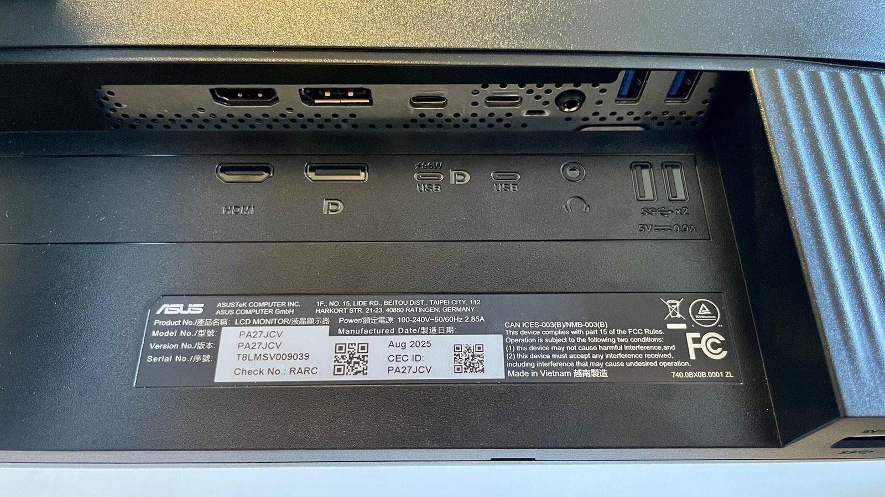
The monitor supports USB C with DisplayPort video, data transfer, and up to 96W of power delivery. That means a compatible laptop can connect to the display and receive power through a single cable.
For anyone who regularly moves between a laptop and a desktop setup, that can make a big difference. Instead of dealing with a collection of cables every time you sit down, you can simplify the connection considerably.
The PA27JCV also includes HDMI 2.1, DisplayPort 1.4, three USB A ports, an additional USB C connection, and a headphone jack.
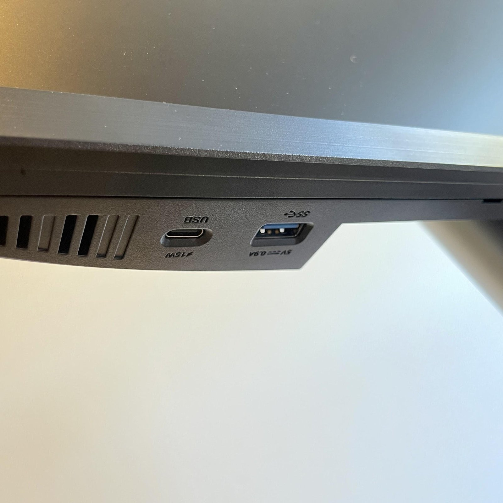
Another feature worth mentioning is Auto KVM. This allows you to connect two computers to the monitor and use a single keyboard and mouse to control them.
Considering that I use a Dell Pro Max 16 for my day job and a Chromebook for my website and social media work, this is a feature that makes a lot of sense for my setup. Being able to move between both computers without needing separate peripherals or constantly changing connections is exactly the kind of convenience I appreciate.
The monitor also includes Smart Input Select, which helps manage switching between connected sources.
I don’t think connectivity is the most exciting thing to talk about in a monitor review, but it’s one of those areas that can make a product considerably easier to live with. The PA27JCV offers enough flexibility to fit into a variety of desk setups without requiring a collection of adapters and workarounds.
DisplayWidget Center: Making Adjustments Easier
One of the things I’ve enjoyed exploring is ASUS’s accompanying DisplayWidget Center software for PC.
Rather than navigating the monitor’s onboard menus using physical buttons, DisplayWidget Center lets you adjust and fine tune monitor settings directly from your computer.
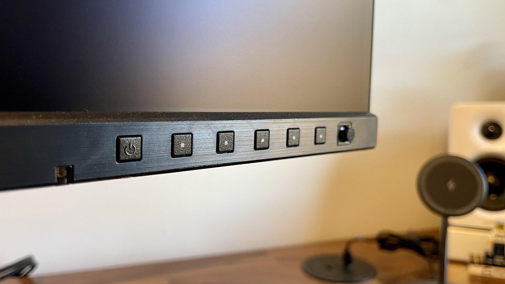
I’ve spent some time playing around with the software, and it’s been a great addition to the overall experience. Having those controls available on the desktop makes it much easier to experiment with different settings and dial in the display to your preferences without interrupting whatever you’re working on.
There’s also an interesting addition that I wasn’t expecting: an AI assistant.
If you’re looking for a particular setting but aren’t entirely sure what it’s called or where to find it, you can use the assistant to help locate what you’re after.
That’s a small but genuinely useful touch. Monitor menus aren’t always the most intuitive things to navigate, especially when you’re dealing with professional displays that offer a much deeper range of adjustments than your typical office monitor.
It’s one of those features that might not sell someone on the monitor by itself, but once you’re using the display, it makes the experience a little more convenient.
I appreciate that ASUS hasn’t limited the PA27JCV’s functionality to what’s accessible through the physical controls on the monitor. Having a software interface that makes those adjustments easier is a welcome addition, particularly for someone like me who enjoys experimenting with settings to get the display just right.
A Few More Things Worth Mentioning
There are a few other features worth calling out, even if they haven’t been the primary focus of my time with the monitor.
The PA27JCV offers a fully adjustable stand, with height adjustment, tilt, swivel, and pivot functionality. You can raise or lower the display, angle it to suit your seating position, or rotate it into portrait orientation.
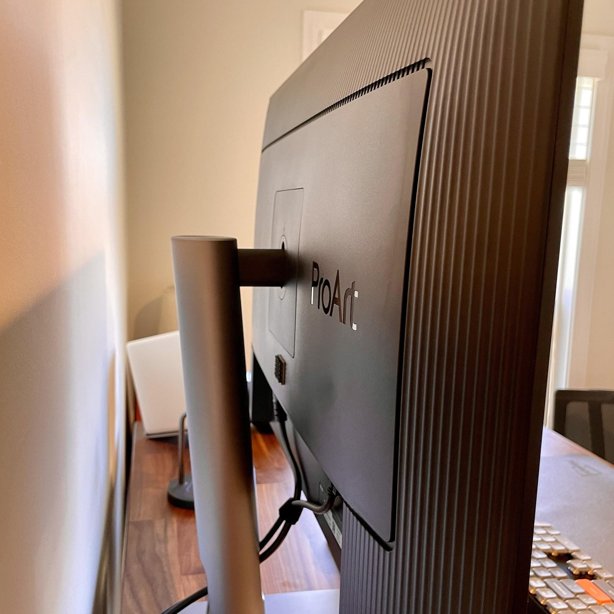
That flexibility is important. A monitor can have a fantastic panel, but if you can’t position it comfortably on your desk, you’re going to spend a lot of time fighting the setup.
ASUS also includes its Eye Care technologies, including flicker free operation and low blue light features. These are intended to help make extended periods in front of the display more comfortable.
The combination of the adjustable stand, display technologies, and software controls gives you quite a bit of flexibility in how you set up and use the monitor.
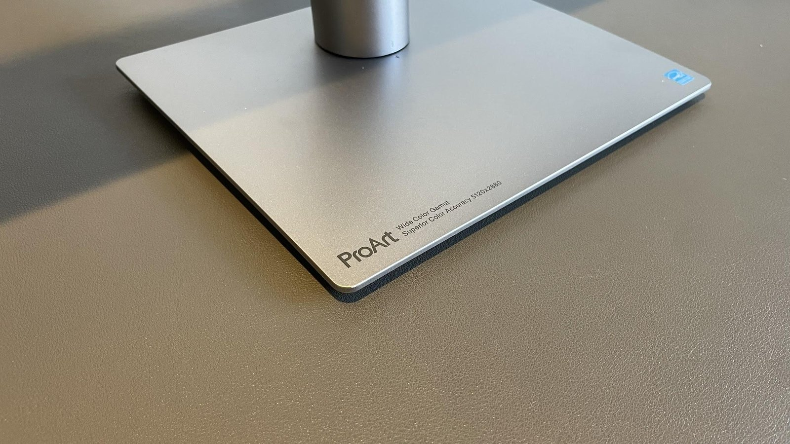
None of these features is necessarily a reason to buy the PA27JCV on its own. Together, though, they help make it feel like a monitor designed to be used throughout a full working day rather than one that simply looks good on a spec sheet.
Where Things Stand After Six Weeks
I’ve been using the PA27JCV for about a month and a half now, and I’ve had enough time to get a pretty good feel for what it brings to my desk.
The biggest question I had going into this review was whether I could move from a 34 inch ultrawide to a 27 inch 5K display without giving up the workspace I depend on.
So far, the answer has been yes.
The clarity is excellent, the resolution has made multitasking more comfortable than I expected, and DisplayWidget Center has been a genuinely useful addition to the experience. The flexibility of being able to use the same display with both my work laptop and Chromebook is another benefit that fits nicely into how I use my desk.
There are still things I’d like to explore further, particularly the different color modes and some of the creative capabilities that make this part of ASUS’s ProArt lineup interesting in the first place.
I’d also really like to spend some time comparing a 5K display like this against a good 4K monitor. On paper, the resolution difference is significant, but I’d be interested to see how much of that difference translates into everyday use. Is the additional pixel density something most people will immediately appreciate? Does it meaningfully change how much you can comfortably fit on the screen? And where does 4K still make more sense?
Those are questions I’d like to spend more time exploring.
For now, the PA27JCV has earned its place on my desk. It’s made a strong case for why resolution matters beyond simply making an image look sharper, and I’ve enjoyed getting accustomed to what 5K brings to my daily workflow.
I hope to keep finding new strengths in the PA27JCV as my time with it continues. For a monitor that initially had me questioning whether I could give up the physical size of my ultrawide, that’s a pretty good place to be.
The ASUS ProArt PA27JCV made a 27 inch display feel like enough after years on a 34 inch ultrawide. The 5K resolution and roughly 218 pixels per inch keep six windows sharp and readable at 125% scaling, USB C power delivery and Auto KVM make it easy to share between two computers, and DisplayWidget Center takes the hassle out of dialing in settings. It has earned its place on the desk, with color modes and a 5K versus 4K comparison still left to explore.